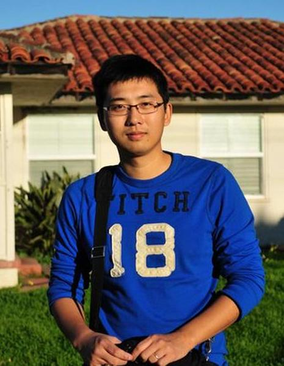

(Raullen) Qi Chai -- Ph.D. Candidate

- Address:
- Department of Electrical and Computer Engineering
- University of Waterloo
- Waterloo, Ontario, Canada, N2L 3G1
- Phone: (519) 888-4567 x 31240
- Email: q3chai [at] uwaterloo [dot] ca
- Office: EIT 4132
- Teaching Assistant:
- ECE 250: Algorithms and Data Structures (Winter 2008, Winter 2010)
- ECE 411: Digital Communications (Spring 2009, Spring 2010)
- Research Assistant: (from Sep. 2008 to now)
- Research Interests:
- Interested in all aspects of network security and applied cryptography
- Advanced algorithms and data structures
- Information systems such as database systems and CMS
- Cloud computing and Parallel computing using CUDA and FPGAs
- Currently Working on:
- Technical Skills
- Languages: C/C++/STL, Python(my favourite ^_^), Java, SQL, Assembly, JavaScript/HTML/CCS, Verilog
- Modeling & Computing: Visual Studio, Eclipse, Matlab, Maple, Git/SVN, Power Designer, Sage, CUDA
- Malware Analysis: Wireshark, OllyDbg, PeiD, IDA Pro, Capturebat, Process Explorer, Process Monitor
- Technical Writing: LATEX, SmartDraw, TpX, Ipe, jPicEdt, Microsoft Office
- Database Development: ORALCE, MS-SQL, MYSQL, Berkeley DB, SQLite
- Platforms: *Unix, Windows/Windows Mobile, Android
- Selected Publications:
- Q. Chai and G. Gong, Verifiable symmetric searchable encryption for semi-honest-but-curious cloud servers, accepted by IEEE International Conference on Communications, ICC'12, Ottawa, Canada, 2012.
- Q. Chai and G. Gong, BUPLE: securing passive RFID communication through physical layer enhancements, to appear In Proceedings of Workshop on RFID Security, RFIDSec'11, Amherst, MA, USA, 2011.
- Q. Chai and G. Gong, On the (in)security of two Joint Encryption and Error Correction schemes, International Journal of Security and Networks, vol.6, no.4, pp. 191--200, 2011.
- Q. Chai and G. Gong, Differential cryptanalysis of two joint encryption and error correction schemes, accepted by IEEE Global Communications Conference, GLOBECOM'12, Houston, TX, USA, 2011.
- M. Safkhani, N. Bagheri, M. Naderi, Y. Luo and Q. Chai, Tag impersonation attack on two RFID mutual authentication protocols, Sixth International Conference on Availability, Reliability and Security, ARES'11, Vienna, Austria, 2011.
- Q. Chai, X. Fan and G. Gong, An ultra-efficient key recovery attack on the lightweight stream cipher A2U2, Cryptology ePrint Archive, Report 2011/247, also submitted to Information Processing Letters, 2011.
- Y. Luo, Q. Chai, G. Gong and X. Lai, WG-7, A lightweight stream cipher with good cryptographic properties, IEEE Global Communications Conference, GLOBECOM'10, Miami, Florida, USA, 2010.
- Q. Chai and G. Gong, A lightweight protocol to robust TID-based anti-counterfeiting (Full Paper), Technical Report, CACR 2010-09, University of Waterloo, 2010.
- Q. Chai and G. Gong, A lightweight protocol to robust TID-based anti-counterfeiting, Poster Presentation at IEEE International Conference on RFID, RFID'10, Orlando, Florida, USA, 2010.
- Professional Service
- Peer Reviewer
- Computers & Mathematics with Applications, Elsevier
- Cryptography and Communications Discrete Structures, Boolean Functions and Sequences
- International Workshop on the Arithmetic of Finite Fields (WAIFI'12)
- The 3rd International Workshop on Security and Privacy in Cloud Computing (ICDCS-SPCC'12)
- Computers & Mathematics with Applications (Elsevier)
- Fast Software Encryption (FSE 2012)
- IEEE 75th Vehicular Technology Conference (VTC2012)
- 7th International Conference for Internet Technology and Secured Transactions (ICITST 2011)
- 11th International Conference on Cryptology in India (Indocrypt 2010)
- IEEE Global Communications Conference (GLOBECOM'11)
- IEEE Transactions on Wireless Communications
- Website Manager
- The 7th International Conference on Sequences and Their Applications (SETA 2012), Waterloo, Ontario, Canada.
- Joint German - Canadian Workshop on Embedded Systems, Signal Processing, and IT Security (ESSPRITS 2011), Waterloo, Ontario, Canada.
- The 17th International Workshop on Selected Areas in Cryptography (SAC'10), Waterloo, Canada
- The 7th Conference on Sequences and their applications (SETA'11), Waterloo, Canada
- Others
- Me in life: http://www.raullen.com
- My GitHub: https://github.com/raullenchai
Wannna know me more?
Qi Chai@facebook